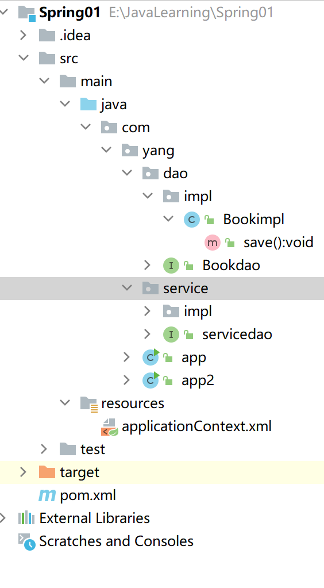
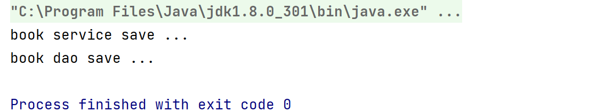
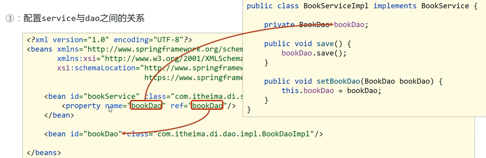
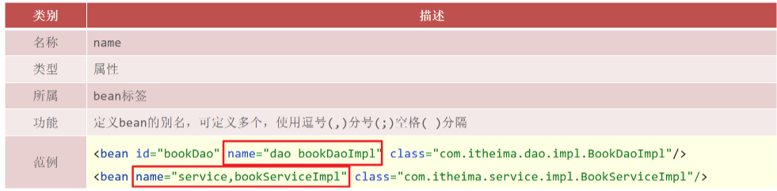
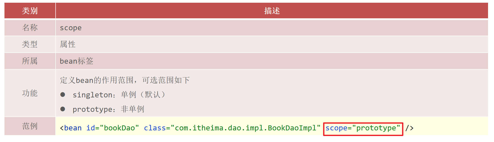

Spring 简介
特点：
- 简化开发，降低企业级开发的复杂性
IOC(反转控制)
AOP(面向切面编程)
- 事务处理
- 框架整合，高效整合其他技术，提高企业级应用开发与运行效率
MyBatis
MyBatis-plus
Struts
Struts2
Hibernate
……
初识Spring：
Spring的生态圈

主要学习Spring framework（Spring的基础），Springboot（更简单，更方便）和Spring Cloud
Spring Framework系统架构：

Spring基础概念：
- 目前代码的问题在于高耦合性

但是想要使用，必须创建对象。
解决方案
- 使用对象时，在程序中不要主动使用new产生对象，转换为由外部提供对象
- 引入IOC（控制反转）：
使用对象时，由主动new产生对象转换为由外部提供对象，此过程中对象创建控制权由程序转移到外部，此思想称为控制反转。通俗的讲就是“将new对象的权利交给Spring，我们从Spring中获取对象使用即可”
- Spring技术对IoC思想进行了实现
- Spring提供了一个容器，称为IOC容器，用来充当IoC思想中的“外部”
- IOC容器负责对象的创建、初始化等一系列工作，被创建或被管理的对象在IoC容器中统称为Bean

- DI（Dependency Injection）依赖注入（放入了Service和Dao两个对象，两个对象是有依赖关系（implements））
- 在容器中建立bean与bean之间的依赖关系的整个过程，称为依赖注入。
- 通俗理解：
Class A中用到了Class B的对象b，一般情况下，需要在A的代码中显式的new一个B的对象。采用依赖注入技术之后，A的代码只需要定义一个私有的B对象，不需要直接new来获得这个对象，而是通过相关的容器控制程序来将B对象在外部new出来并注入到A类里的引用中。
- 最终效果
- 使用对象时不仅可以直接从IoC容器中获取，并且获取到的bean已经绑定了所有的依赖关系
IOC入门实例：
原本实现：
项目目录：
bookimpl和bookdao
package com.yang.dao.impl;
import com.yang.dao.Bookdao;
public class Bookimpl implements Bookdao {
public void save() {
System.out.println("book dao save ...");
}
}
package com.yang.dao;
public interface Bookdao {
public void save();
}
serviceimpl和servicedao
package com.yang.service.impl;
import com.yang.dao.Bookdao;
import com.yang.dao.impl.Bookimpl;
import com.yang.service.servicedao;
public class serviceimpl implements servicedao {
private Bookdao bookdao = new Bookimpl();
@Override
public void save() {
System.out.println("book service save ...");
bookdao.save();
}
}
package com.yang.service;
public interface servicedao {
public void save();
}
app执行类
package com.yang;
import com.yang.service.impl.serviceimpl;
import com.yang.service.servicedao;
public class app {
public static void main(String[] args) {
servicedao bookService = new serviceimpl();
bookService.save();
}
}
显而易见执行结果
使用IOC实现：
实现步骤：
- 【第一步】导入Spring坐标
<dependencies>
<!--导入spring的坐标spring-context，对应版本是5.2.10.RELEASE-->
<dependency>
<groupId>org.springframework</groupId>
<artifactId>spring-context</artifactId>
<version>5.2.10.RELEASE</version>
</dependency>
</dependencies>【第二步】定义Spring管理的类（接口）
原本已经定义好了
【第三步】创建Spring配置文件，配置对应类作为Spring管理的bean对象
定义applicationContext.xml配置文件并配置BookServiceImpl
<?xml version="1.0" encoding="UTF-8"?> <beans xmlns="http://www.springframework.org/schema/beans" xmlns:xsi="http://www.w3.org/2001/XMLSchema-instance" xsi:schemaLocation="http://www.springframework.org/schema/beans http://www.springframework.org/schema/beans/spring-beans.xsd"> <!-- 1.导入Spring的坐标Spring—context，对应版本是5.2.10 RELEASE--> <!-- 2.配置bean, id相当于名字方便取东西 class属性：表示给bean定义类型 --> <bean id="bookdao" class = "com.yang.dao.impl.Bookimpl"/> <bean id="servicedao" class="com.yang.service.impl.serviceimpl"/> </beans>【第四步】初始化IOC容器（Spring核心容器/Spring容器），通过容器获取bean对象
在app2进行实现
import com.yang.service.servicedao; public class app2 { public static void main(String[] args) { //获取IOC容器 ApplicationContext ctx = new ClassPathXmlApplicationContext("applicationContext.xml"); //获取bookimp的bean // Bookdao Bookdao = (Bookdao) ctx.getBean("bookdao"); // Bookdao.save(); //获取serviceimpl的bean servicedao servicedao = (servicedao) ctx.getBean("servicedao"); servicedao.save(); } }同样可以得到以上的原本实现的结果。
DI入门案例：
- 基于IOC管理bean
- Service中使用new形式创建的Dao对象是否保留？(否)
- Service中需要的Dao对象如何进入到Service中？(提供方法)
- Service与Dao间的关系如何描述？(配置)
实现步骤：
- 【第一步】删除使用new的形式创建对象的代码
package com.yang.service.impl;
import com.yang.dao.Bookdao;
import com.yang.service.servicedao;
public class serviceimpl implements servicedao {
private Bookdao bookdao;
@Override
public void save() {
System.out.println("book service save ...");
bookdao.save();
}
}
- 【第二步】提供依赖对象对应的setter方法
// 提供对应的setter方法
public void setBookdao(Bookdao bookdao) {
this.bookdao = bookdao;
}【第三步】配置service与dao之间的关系
在application.xml中配置
<?xml version="1.0" encoding="UTF-8"?>
<beans xmlns="http://www.springframework.org/schema/beans"
xmlns:xsi="http://www.w3.org/2001/XMLSchema-instance" xmlns:util="http://www.springframework.org/schema/util"
xsi:schemaLocation="http://www.springframework.org/schema/beans http://www.springframework.org/schema/beans/spring-beans.xsd http://www.springframework.org/schema/util https://www.springframework.org/schema/util/spring-util.xsd">
<!-- 1.导入Spring的坐标Spring—context，对应版本是5.2.10 RELEASE-->
<!-- 2.配置bean,id相当于名字方便取东西-->
<bean id="bookdao" class = "com.yang.dao.impl.Bookimpl"/>
<bean id="servicedao" class="com.yang.service.impl.serviceimpl">
<!-- 配置server和dao的关系-->
<!--配置server与dao的关系
property标签：表示配置当前bean的属性
name属性：表示配置哪一个具体的属性
ref属性：表示参照哪一个bean
-->
<property name = "bookdao" ref = "bookdao"/>
</bean>
</beans>运行app2，结果一样。
两个bookdao指向不一样。
Bean的基础配置：
配置说明：

Bean别名配置：
获取bean，无论是name还是id，如果无法获取到，将抛出异常
NoSuchBeanDefinitionException
Bean作用范围配置：
Spring默认生成单例对象，可复用
scope的取值不仅仅只有singleton和prototype，还有request、session、application、 websocket ，表示创建出的对象放置在web容器(tomcat)对应的位置。比如：request表示保存到request域中。
Bean的实例化：
bean本质上就是对象，创建bean使用构造方法完成
构造方法方式：
和IOC入门实例一样。
Spring创建bean调用的是无参的构造方法
静态工厂方式：
- OrderDao接口和OrderDaoImpl实现类
public interface OrderDao {
public void save();
}
public class OrderDaoImpl implements OrderDao {
public void save() {
System.out.println("order dao save ...");
}
}- OrderDaoFatory工厂类
//静态工厂创建对象
public class OrderDaoFactory {
public static OrderDao getOrderDao(){
System.out.println("factory setup....");
return new OrderDaoImpl();
}
}- applicationContext.xml配置
<!--方式二：使用静态工厂实例化bean-->
<bean id="orderDao" class="com.itheima.factory.OrderDaoFactory" factory-method="getOrderDao"/>- AppForInstanceOrder测试类
public class AppForInstanceOrder {
public static void main(String[] args) {
ApplicationContext ctx = new ClassPathXmlApplicationContext("applicationContext.xml");
OrderDao orderDao = (OrderDao) ctx.getBean("orderDao");
orderDao.save();
}
}实例工厂方式：
- UserDao接口和UserDaoImpl实现类
public interface UserDao {
public void save();
}
public class UserDaoImpl implements UserDao {
public void save() {
System.out.println("user dao save ...");
}
}- UserDaoFactory工厂类
//实例工厂创建对象
public class UserDaoFactory {
public UserDao getUserDao(){
return new UserDaoImpl();
}
}- applicationContext.xml配置
<!--方式三：使用实例工厂实例化bean-->
<bean id="userFactory" class="com.itheima.factory.UserDaoFactory"/>
<bean id="userDao" factory-method="getUserDao" factory-bean="userFactory"/>- AppForInstanceUser测试类
public class AppForInstanceUser {
public static void main(String[] args) {
// //创建实例工厂对象
// UserDaoFactory userDaoFactory = new UserDaoFactory();
// //通过实例工厂对象创建对象
// UserDao userDao = userDaoFactory.getUserDao();
// userDao.save();
ApplicationContext ctx = new ClassPathXmlApplicationContext("applicationContext.xml");
UserDao userDao = (UserDao) ctx.getBean("userDao");
userDao.save();
}
}FactoryBean<T>方式：
- 定义UserDaoFactoryBean实现FactoryBean<UserDao>
UserDaoFactoryBean中实例化什么类型的对象泛型就是该类型。
//FactoryBean创建对象
public class UserDaoFactoryBean implements FactoryBean<UserDao> {
//代替原始实例工厂中创建对象的方法
public UserDao getObject() throws Exception {
return new UserDaoImpl();
}
public Class<?> getObjectType() {
return UserDao.class;
}
}- applicationContext.xml配置
<!--方式四：使用FactoryBean实例化bean-->
<bean id="userDao" class="com.itheima.factory.UserDaoFactoryBean"/>Bean的生命周期：
- 生命周期：从创建到消亡的完整过程
- bean生命周期：bean从创建到销毁的整体过程
- bean生命周期控制：在bean创建后到销毁前做一些事情
代码演示：
- 提供生命周期控制方法
public class BookDaoImpl implements BookDao {
public void save() {
System.out.println("book dao save ...");
}
//表示bean初始化对应的操作
public void init(){
System.out.println("init...");
}
//表示bean销毁前对应的操作
public void destory(){
System.out.println("destory...");
}
}- applicationContext.xml配置
<!--init-method：设置bean初始化生命周期回调函数,此处填写init方法名-->
<!--destroy-method：设置bean销毁生命周期回调函数，仅适用于单例对象，此处填写destory方法名-->
<bean id="bookDao" class="com.itheima.dao.impl.BookDaoImpl" init-method="init" destroy-method="destory"/>- AppForLifeCycle测试类
public class AppForLifeCycle {
public static void main( String[] args ) {
//此处需要使用实现类类型，接口类型没有close方法
ClassPathXmlApplicationContext ctx = new ClassPathXmlApplicationContext("applicationContext.xml");
BookDao bookDao = (BookDao) ctx.getBean("bookDao");
bookDao.save();
//关闭容器，执行销毁的方法
ctx.close();
}
}原本ApplicationContext类中没有close()方法，所以我们要换成 ClassPathXmlApplicationContext类，其中ClassPathXmlApplicationContext继承了
ApplicationContext，而ApplicationContext仅仅是个接口
也可以调用一个关闭“钩子”：
registerShutdownHook方法，它比close更加温和。在Web应用中，容器的关闭应于Tomcat同步（这些关闭容器的方法可以不用care）。
Bean生命周期控制：
为了更加方便操作，省略init-method和destroy-method这两个配置，可以使用Spring提供的接口。
实现InitializingBean, DisposableBean接口：
public class BookServiceImpl implements BookService, InitializingBean, DisposableBean {
private BookDao bookDao;
public void setBookDao(BookDao bookDao) {
System.out.println("set .....");
this.bookDao = bookDao;
}
public void save() {
System.out.println("book service save ...");
bookDao.save();
}
public void destroy() throws Exception {
System.out.println("service destroy");
}
public void afterPropertiesSet() throws Exception { //afterPropertiesSet在配置设置好之后再执行，意为先打印“set”再打 //印"service init"
System.out.println("service init");
}
}所以
- 初始化容器
- 创建对象（内存分配）
- 执行构造方法
- 执行属性注入（set操作）
- 执行bean初始化方法
- 使用bean
- 执行业务操作
- 关闭/销毁容器
- 执行bean销毁方法
Bean销毁时机：
- 容器关闭前触发bean的销毁
- 关闭容器方式：
手工关闭容器
ConfigurableApplicationContext接口close()操作注册关闭钩子，在虚拟机退出前先关闭容器再退出虚拟机
ConfigurableApplicationContext接口registerShutdownHook()操作 未完待续。。。